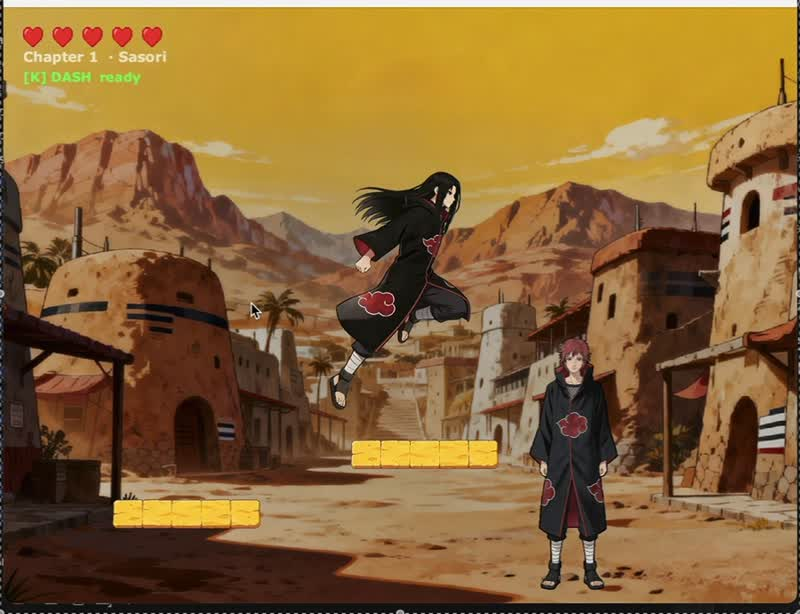

University coursework · 2026
Akatsuki
A 2D Java game with three levels, boss encounters and changing gravity. I designed the gameplay and progression, then tested and tuned it through repeated playthroughs.
Java / Swing / City CS Engine
Java Project assessment: 82%
Watch gameplay & read about the project ↗